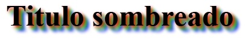

Es importante tener en cuenta que esta propiedad no la soporta el Internet Explorer 9.
La propiedad text-shadow nos permite definir una sombra a un texto, la sintaxis más común es:
Elemento {
text-shadow: desplazamientoX desplazamientoY radio-de-desenfoque color;
}
La propiedad tiene 4 valores que son los siguientes:
- El desplazamiento horizontal de la sombra, un desplazamiento negativo pondrá la sombra a la izquierda.
- El desplazamiento vertical, un valor negativo dispone la sombra en la parte superior del texto, uno positivo la sombra estará por debajo del texto.
- El tercer parámetro es el radio de desenfoque, si se pone a 0 la sombra será fuerte y con color liso, más grande el número, más borrosa será.
- El último parámetro es el color de la sombra.
Por ejemplo si queremos que un texto tenga una sombra en la parte inferior a derecha con un pequeño desenfoque de color gris luego debemos implementar el siguiente código:
#titulo1 {
text-shadow: 5px 5px 5px #aaa;
}
SI queremos que la sombra se disponga en la parte superior izquierda de cada letra luego debemos definir los siguientes valores:
#titulo2 {
text-shadow: -5px -5px 5px #aaa;
}
Otra sintaxis de text-shadow es aplicar varias sombras al texto, por ejemplo:
#titulo3 {
text-shadow: 3px 3px 5px #f00,
6px 6px 5px #0f0,
9px 9px 5px #00f;
}
